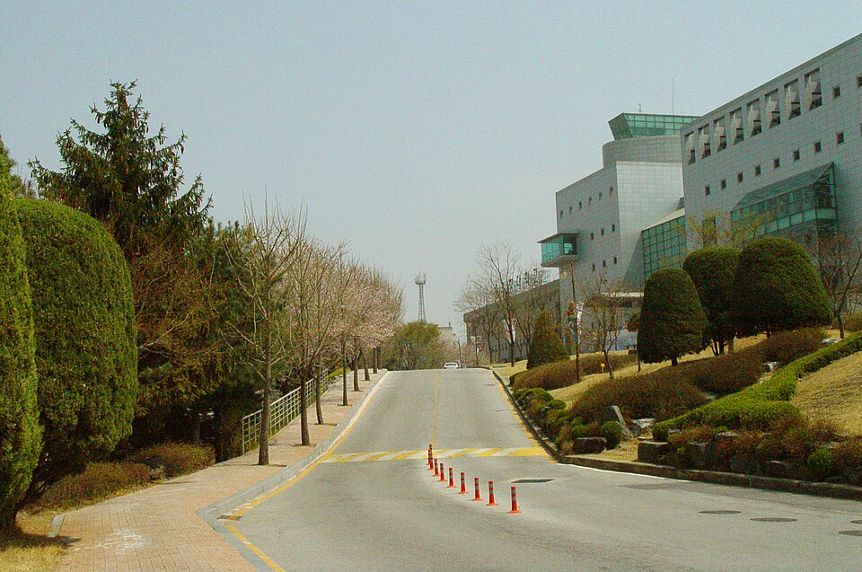

정시 반영비율 표는 대개 "국어 몇 %, 수학 몇 %"로 적혀 있습니다. 그런데 순천향대학교는 표를 읽는 방식 자체가 다릅니다. 어느 과목을 보는지가 미리 정해져 있지 않고, 학생이 잘 본 과목을 골라서 넣습니다. 이 한 줄 때문에 남은 기간의 과목 배분이 크게 달라집니다. 고3 국어과외나 수학 수업 시간을 어디에 쓸지 정하기 전에 먼저 확인해야 할 구조입니다.
| 모집단위 | 국어 | 수학 | 영어 | 탐구 |
|---|---|---|---|---|
| 의예과·간호학과 | 20% | 30% | 30% | 20% (2과목 평균) |
| 그 외 전 모집단위 | 국어·수학·영어 중 우수 2개 영역을 각 40% (합 80%) | 20% (우수 1과목) | ||
활용 지표는 백분위이고, 영어는 등급을 변환점수로 바꿔 넣습니다. 2027학년도 신입학 전형 시행계획과 직전 연도 정시 모집요강의 반영 방법이 같습니다.
의예과와 간호학과를 뺀 모든 모집단위는 국어·수학·영어 가운데 점수가 잘 나온 두 영역만 각 40%씩 넣습니다. 세 과목을 다 잘해야 하는 구조가 아니라, 세 과목 중 하나는 결과적으로 쓰이지 않는 구조입니다. 탐구도 두 과목을 보되 잘 본 한 과목만 20%로 들어갑니다.
이 구조가 실제로 바꾸는 것은 "약한 과목을 끌어올릴까, 강한 과목을 더 올릴까"의 답입니다. 보통은 약한 과목을 메우는 게 정답이지만, 순천향대학교 기준으로는 반대입니다. 이미 잘하는 두 과목의 백분위를 더 올리는 쪽이 그대로 점수가 됩니다. 수학이 끝까지 안 오른다면 국어와 영어 둘로 80%를 채우는 길이 열려 있고, 국어가 약하면 수학과 영어로 채울 수 있습니다.
다만 주의할 점이 있습니다. 어느 과목이 "우수 2개"가 될지는 수능 성적이 나와야 정해집니다. 그러니 한 과목을 미리 버리는 것은 위험합니다. 세 과목 중 두 개를 확실한 무기로 만들어 두고, 나머지 하나는 최저 기준을 넘길 만큼만 유지하는 배분이 안전합니다.
이 두 모집단위만 네 영역을 모두 반영합니다. 국어 20%, 수학 30%, 영어 30%, 탐구 20%(두 과목 평균). 눈여겨볼 것은 영어가 수학과 같은 30%라는 점입니다. 영어를 등급만 맞추면 되는 과목으로 두는 다른 대학들과 달리, 여기서는 영어 한 등급이 수학 한 등급만큼 무겁습니다. 수학에는 미적분·기하 선택 시 취득 백분위의 10%, 과학탐구 두 과목에 각각 10% 가산이 붙습니다.
| 등급 | 1 | 2 | 3 | 4 | 5 | 6 | 7 | 8 | 9 |
|---|---|---|---|---|---|---|---|---|---|
| 변환점수 | 96 | 92 | 85 | 73 | 56 | 36 | 19 | 7 | 0 |
1등급과 2등급은 4점 차이입니다. 그런데 3등급(85)에서 4등급(73)으로 내려가면 12점, 4등급에서 5등급(56)으로는 17점이 빠집니다. 영어가 2등급 언저리라면 1등급을 노리느라 시간을 더 쓸 이유가 크지 않고, 3~4등급 경계라면 영어가 최우선입니다. 한 등급을 올리는 것만으로 국어나 수학에서 백분위 10점 이상을 올린 것과 비슷한 효과가 납니다.
순천향대학교 학생부교과(교과우수자) 전형의 수능 최저학력기준은 모집단위에 따라 크게 갈립니다. 의예과는 국어·수학·영어·탐구 4개 영역 등급 합 6 이내, 간호학과는 네 영역 중 우수 3개 영역 등급 합 10 이내로 높은 편입니다. 반면 보건행정경영학과·의료생명공학과·임상병리학과·작업치료학과·의약공학과·의공학과·의생명융합학부는 국어·수학·영어 중 우수 1개 영역 4등급 이내, 그 외 모집단위는 우수 1개 영역 5등급 이내입니다.
"세 과목 중 잘한 하나가 5등급 안"이라는 기준은, 수능을 평범하게 본 학생이라면 대부분 넘깁니다. 그러니 이 전형을 생각한다면 수능 최저를 걱정하는 데 시간을 쓰기보다 교과 성적을 올리는 데 시간을 쓰는 쪽이 맞습니다. 다만 의예과는 수학 선택과목이 미적분·기하가 아니면 수학 등급을 0.5등급 낮춰 반영하는 등 조정 규정이 따로 있으니, 해당 모집단위를 노린다면 모집요강의 유의사항을 끝까지 읽어야 합니다.
학생 수준에 맞는 선생님을 24시간 안에 추천해 드려요. 상담은 무료입니다.